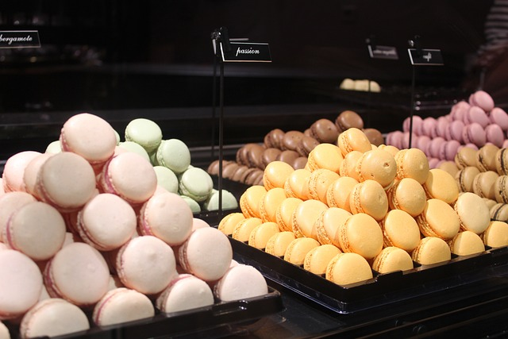
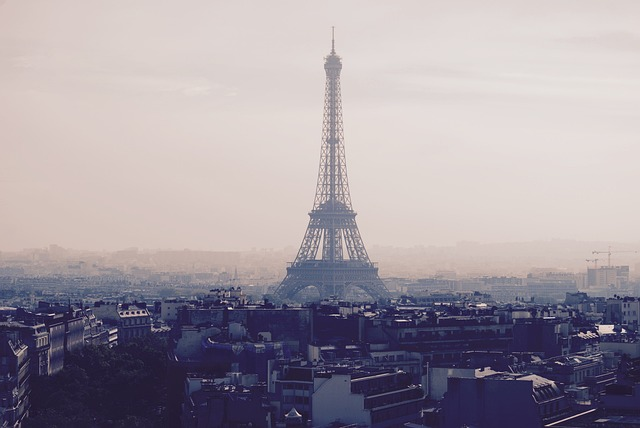

París posee un clima continental caracterizado por veranos calurosos y sofocantes e inviernos fríos. Las lluvias son frecuentes, con unos niveles medios de precipitaciones algo superiores a los de Londres, y se encuentran repartidas a lo largo de todo el año.
La gastronomía de París es considerada una de las mejores del mundo debido a la calidad de sus ingredientes y la diversidad cultural de la capital francesa1. Algunos platos tradicionales que se pueden disfrutar en París incluyen:
La vida cultural y las tradiciones de París pueden impresionar a cualquiera por su riqueza y diversidad. En esta ciudad mágica, algo interesante sucede todo el tiempo, una vez en el centro de la metrópoli, casi cada hora podrás asistir a uno u otro evento, pasando del centro de arte a la sala de conciertos, admirando las actuaciones de los artistas callejeros en el camino.
| Itinerario de Viaje a Japón | |||
|---|---|---|---|
| Hora | Actividad | Ubicación | Detalles |
| 10:00 | Desayuno | Cafeteria de barrio | Té tipico de japon |
| 11:00 | Visita | BADAT | PROGR |
| 12:00 | Tour en bus | BADAT | vista panoramica |
| 14:00 | Almuerzo | BADAT | cocina japonesa |
| 15:00 | Visita | BADAT | Recorrido de 3 horas |
| 17:00 | Tour | ||
Sitio web conVuelos baratos
Sitio web conHotel baratos